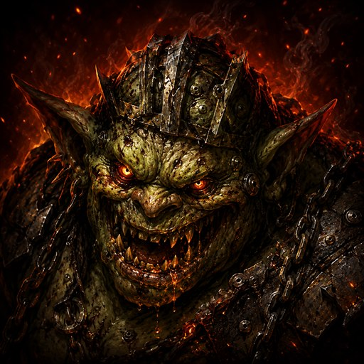
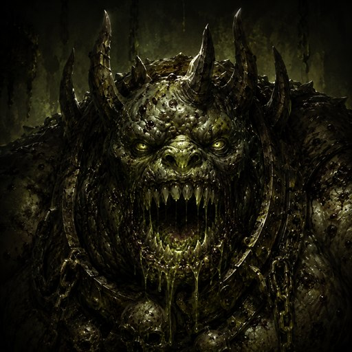
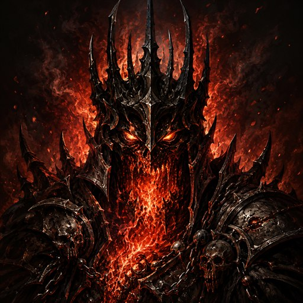

First Warden
Grakk
The gatekeeper of the upper Warren — aggressive, direct, and unforgiving of a slow start.
A single-player Commander gauntlet you play with your own deck. The app is your opponent and your bookkeeper — descend the Warren of Embers, outlast its three wardens, and free Commodore Guff.
Runs in any browser · Installs to your phone or desktop · Works offline · No account, no cost.
Guff's Gauntlet is a solo Magic: The Gathering experience built around Commander. You bring a real deck; the app runs a themed AI opponent and tracks every last point of life, mana, counter, and trigger for both sides — so you can just play.
Import any deck from Scryfall by search or decklist, or pick a Commander and go. The whole card pool of Magic is available.
Each warden is a tuned AI deck that casts, attacks, blocks, and responds on the stack — a real fight, not a solitaire timer.
Life totals, mana, the stack, counters, tokens, keywords, and zone changes are tracked for both players automatically.
A full roguelike descent wrapped around a complete Magic rules toolbox.
Descend a dungeon of rooms, earn loot and boons between fights, and build your run toward the wardens who guard its dark.
Run the story campaign with a persistent economy, or drop into Sandbox to spar against any warden on your own terms.
Bounce, exile, copy, flip, move between zones, add counters and markers, tutor, reanimate, deal direct damage — the manual controls to run any board state.
Live Scryfall import plus support for hexproof, shroud, and the keywords that matter — cast your actual cards against the app.
Add it to your home screen and it plays like a native app, fully offline — it's a Progressive Web App under the hood.
No account, no ads, no purchases. Open the page and play.
Each guards a deeper reach of the Warren. Beat all three to free Commodore Guff — and learn what the Ember really costs.

The gatekeeper of the upper Warren — aggressive, direct, and unforgiving of a slow start.

Deeper in the dark, a grindier threat that punishes greed and rewards a plan.

Holder of the Ember, forged in deathless fire. He cannot truly be killed — only weathered, and escaped.
You're ready in about a minute.
Tap Play — it opens instantly in your browser. Add it to your home screen for one-tap access and offline play.
Pick a Commander and import your list from Scryfall, or search for any card. Choose Campaign or Sandbox.
Play your turns for real. The app runs the warden and keeps score for both sides — you focus on the lines.
Beat the three wardens, collect loot along the way, and reach the heart of the Warren of Embers.
Yes — completely. There's no account, no ads, and nothing to buy. Open the app and play.
No. It runs in any modern browser on phone, tablet, or desktop. If you want, you can "Add to Home Screen" and it installs like a native app that also works offline.
Yes. You bring your own Commander deck — import it from Scryfall by search or decklist. You play your real cards; the app plays the opposing warden and handles all the bookkeeping.
No. Guff's Gauntlet is an independent, unofficial fan project. It is not produced, endorsed, or affiliated with Wizards of the Coast. Magic: The Gathering is a trademark of Wizards of the Coast LLC.
Once you've opened it once, yes — the app caches itself and runs without a connection. (Importing new cards from Scryfall needs a connection.)
Anything with a browser — iPhone, Android, Windows, Mac, Linux. It's a Progressive Web App, so it installs and plays like a native app on all of them.